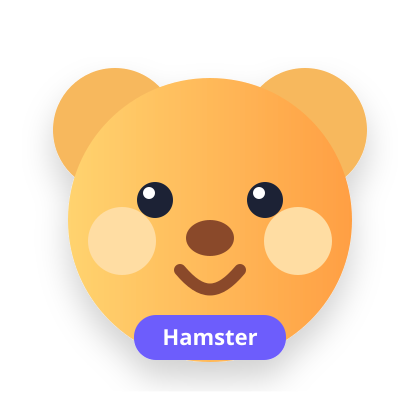

🐹 مسیر یادگیری نگهداری همستر
همستر سالمتر، صاحب آگاهتر
یک اپ آموزشی فارسی، مدرن و مرحلهبهمرحله برای شناخت رفتار، تغذیه، سلامت، محیط زندگی و تمرین همستر.
+۴ مسیر آموزشیتمرین تعاملیRTL + Responsive

دستهبندیهای اصلی
ساختار مشابه Feature و Widget برای تبدیل آسان به Flutter
آموزشهای پیشنهادی
کارتهای قابل تبدیل به CourseCard در Flutter